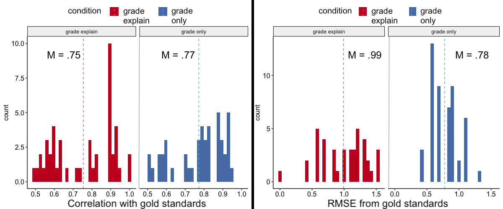

Advisor: Dr. June Ahn
Toolbox: R, Figma, Qualtrics, HTML, CSS, JavaScript
The design challenge for this research is to quickly and effectively analyze "practical analytics", which is locally-grounded, education data that can more directly inform instructional improvements for teachers. Dual challenges arise in utilizing practical analytics:
(1) Such data are often expensive and time consuming to process at scale.
(2) Developing usable analytics that validly relate to actionable, improvement decisions is difficult to achieve in practice.
Observations of challenges in using practical analytics motivate my projects with Dr. June Ahn in the Design and Partnership Lab: develop systems to improve the processing of school-based education data, using a variety of human-computation and machine learning approaches.
Within this context, I designed an experiment to answer the questions:
(1) To what extent can crowdsourcing effectively process open-ended, middle-grade science assessment data?
(2) To what extent can crowdsourcing influence participants’ understanding of task-related concepts, compared to a control group who did not participate in crowdsourcing?
Participants provided results with high accuracy and close agreement with expert scores.
In subsequent simulations, we found that aggregating scores from multiple crowdworkers consistently got us closer to the expert scores, suggesting potential benefit of utilizing collective intelligence in educational domains.
Compared to those who did not participate in the crowdsourcing tasks, we found positive learning outcomes for both of the Grading groups, and a significant outcome for the Grade Only group, after accounting for pre-test science understanding and attitudes towards science.
We did not find significant differences between the two grading conditions (Grade Only and Grade & Explain), contrary to prior work in learning sciences and crowdsourcing in general domains.
This suggests a need to attend to different task design features when it comes to education assessments, such as providing more timely feedback, segmenting task difficulties, or giving opportunities for peer assessments.
Because the crowdsourced scores may show wide deviation from one another, we are also looking into ways to represent variance in data output to end-users (i.e., teachers), to make more informed instructional decisions at scale.
The preliminary findings from our work can be found in a paper we presented at the Learning@Scale Conference' 20.